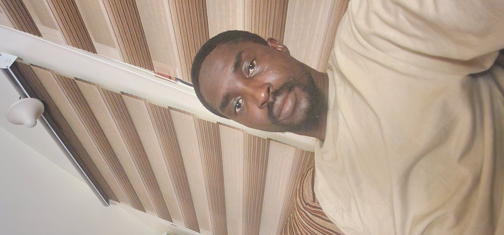

Umar Saad
Computer Science Student |Cybersecurity & Web Security Enthusiast
Welcome to my porfolio.As a Computer Science undergraduate at MIVA Open University with a focus on cybersecurity,I am passionate about protecting digital assets and building secure robust system. Discover my technical projects and cometencies below.
Learn more about me View projectsQuick Bio
I am a dedicated Cybersecurity student passionate about building clean, accessible, and secure web applications that solve real-world problems. My current focus is front-end development using HTML, CSS, and JavaScript, alongside exploring secure coding practices, emerging technologies, and open-source projects.
Beyond my academic studies, I manage my own business, stay current with industry trends through tech and security blogs, sketch user interface concepts, and enjoy playing basketball with friends.
Academic Snapshot
| Course Code | Course Title | Status |
|---|---|---|
| COS 106 | Introduction to Web Technologies | In Progress |
| COS 101 | Introduction to Computing | Completed |
| MTH 101 | Elementary Mathematics I | Completed |
| GST 101 | Communication in English | Completed |